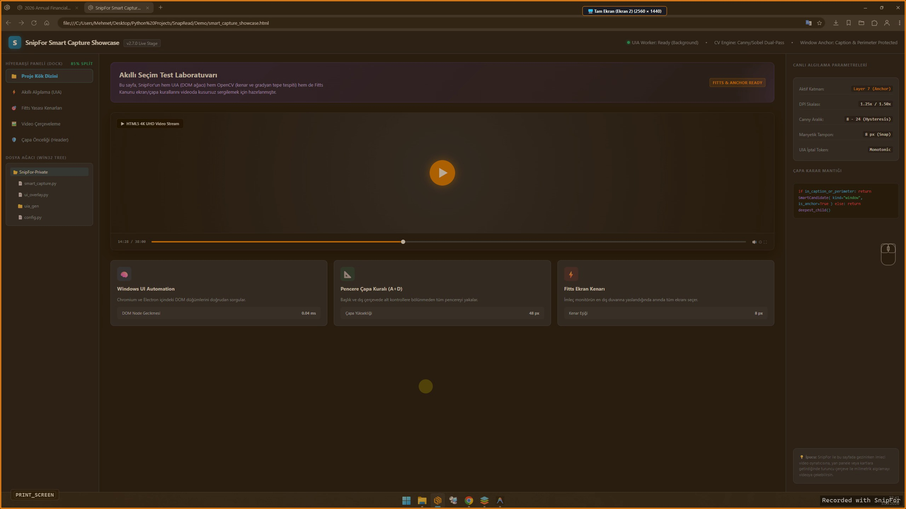
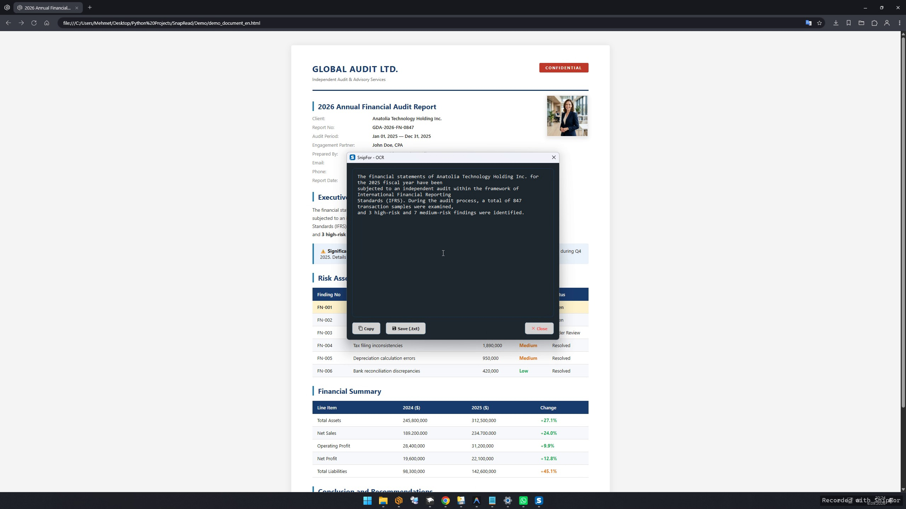
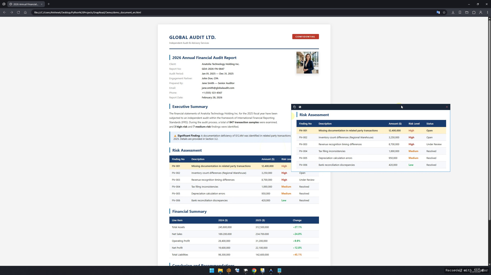
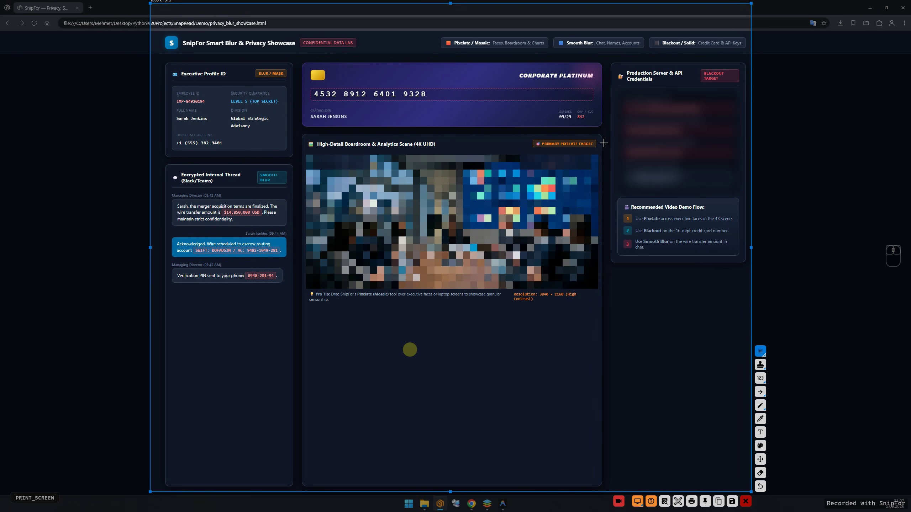
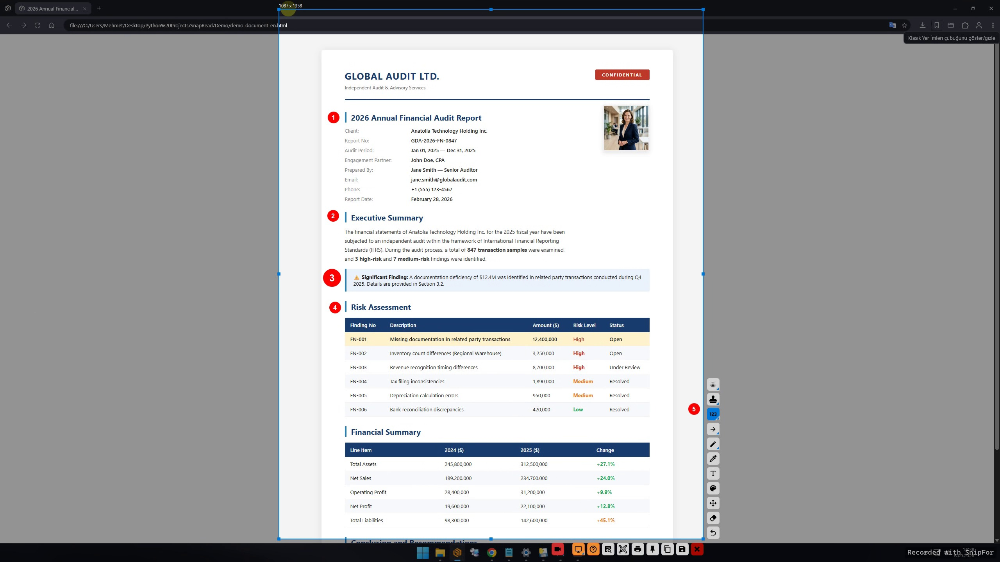
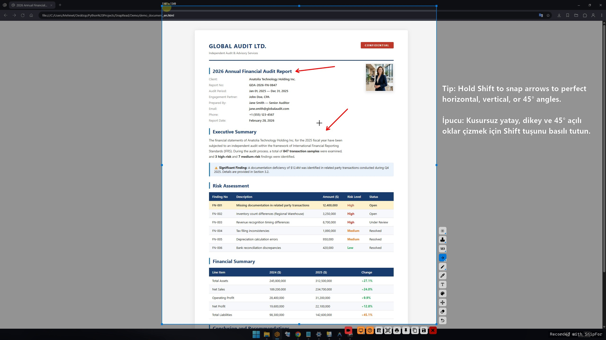
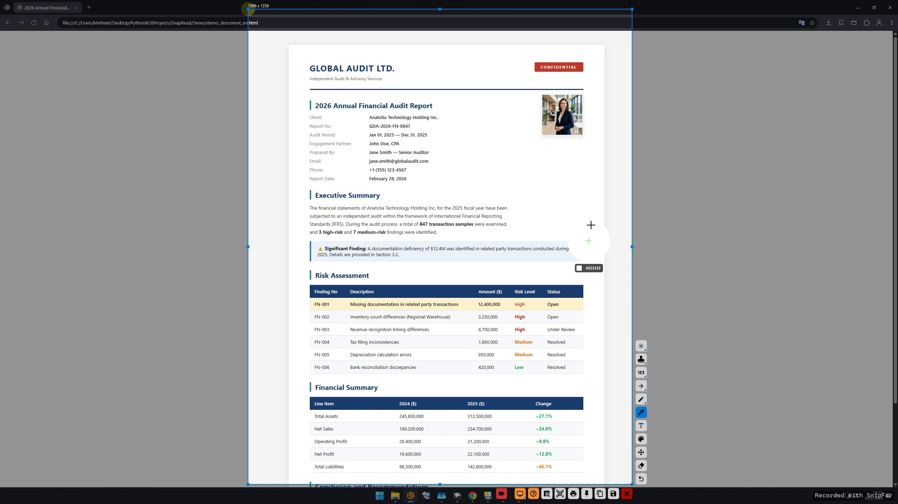
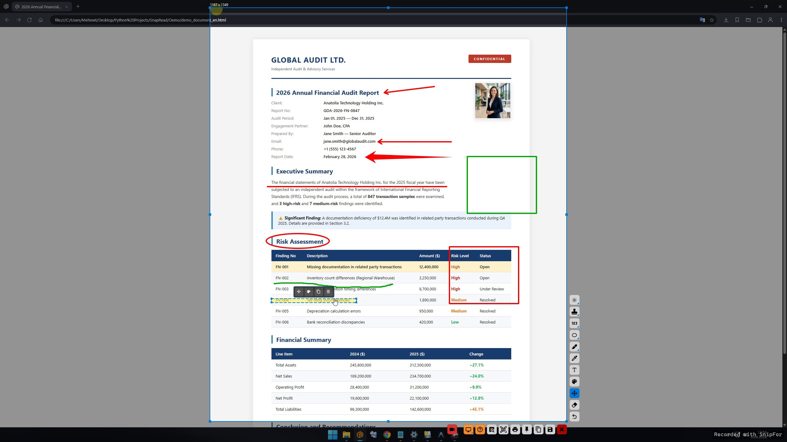

SnipFor Yakalama
Herhangi bir ekran alanını yakalayın, not ekleyin ve çevrimdışı OCR ile metinleri yerel olarak ayıklayın.
İşini hızlı, gizli ve kolay yapmak isteyen herkes için geliştirilmiş ultra hızlı ekran yakalama ve OCR aracı. %100 çevrimdışı. Verileriniz asla bilgisayarınızdan çıkmaz.
İnceleyenler
SnipFor'un güçlü yeteneklerini canlı video demoları ve kısayol rehberleriyle yakından keşfedin.

Farenizi herhangi bir pencereye, dosya listesine, YouTube video oynatıcısına veya ekranın kenarına getirin. SnipFor mikrosaniyeler içinde kusursuz sınırları tespit eder.

Kopyalama korumalı web sayfaları, taranmış faturalar, video kareleri veya masaüstü pencerelerindeki metinleri dahili Tesseract motoruyla anında kopyalanabilir dijital metne çevirin.

Pencereler arasında sürekli geçiş yapmaya son! Kod yazarken, tasarım yaparken veya Excel'e veri girerken ekran görüntüsünü ekrana sabitleyip altındaki uygulamada çalışmaya devam edin.

Ekran görüntülerinizi güvenle paylaşın. Şifreler, kimlik bilgileri, kişisel mesajlar ve API anahtarlarını yüksek kaliteli bulanıklık veya piksel mozaik filtresiyle kapatın.

Adım adım kullanım kılavuzlarını saniyeler içinde oluşturun. Ekrana tıkladıkça otomatik artan (1, 2, 3...) şık rozetler ve durum mühürleri ekleyin.

Çizimlerinizi kusursuz hizalayın. Shift ile otomatik kilitlenen açılı oklar, tam kare/daire oranları, serbest kalem ve şeffaf fosforlu vurgular.

Ekrandaki herhangi bir pikselin rengini nokta atışıyla yakalayın. Dahili büyüteç pikselleri büyüterek canlı HEX (#) ve RGB değerlerini gösterir.

Ekran görüntüsü üzerine zengin metin kutuları ekleyin; dilediğiniz font boyutu, renk ve vurgu stilini canlı düzenleyin.
Görsel iş akışınızı gizlilik odaklı tek bir masaüstü araç setiyle yakalayın, görüntüleyin, düzenleyin, dönüştürün ve yönetin.
Herhangi bir ekran alanını yakalayın, not ekleyin ve çevrimdışı OCR ile metinleri yerel olarak ayıklayın.
Klasörlere hızla göz atın; iş akışınızdan ayrılmadan yakınlaştırın, döndürün, kırpın ve inceleyin.
Ekran videoları ve GIF'ler kaydedin; ardından kırpın, sıkıştırın ve paylaşıma hazır hale getirin.
Kırpma, yeniden boyutlandırma, filtreleme ve detaylı görsel düzenleme araçlarını kullanın.
Video, ses, görsel ve PDF dosyalarını yaygın formatlar arasında topluca dönüştürün.
Kurumsal filigranlar, IT politikaları ve sessiz MSI dağıtımı ile tam kontrollü altyapı.
SnipFor'un her parçası iş akışınızı hızlı, verilerinizi ise yalnızca makinenizde tutmak üzere inşa edilmiştir.
Metin tanıma işlemi gömülü Tesseract ile tamamen yerel olarak gerçekleşir. Bulut yüklemesi yok, API bağımlılığı yok, sıfır veri sızıntısı. Türkçe, İngilizce, Almanca, Fransızca, İtalyanca ve İspanyolca dillerini destekler.
Optimize edilmiş Python/Qt mimarisi. Saniyeler içinde açılır. Minimum RAM kullanımı, arka planda sıfır hantallık.
Akıllı bulanıklaştırma, mozaik, otomatik artan numaratör ve ekrana iğneleme ile dokümantasyon sürecinizi hızlandırın.
Community ile ücretsiz başlayın, Pro ile video ve dönüştürme araçlarına sahip olun veya kurumsal dağıtım için Audit'e geçin.
| Özellik | Community Sürümü | Pro Sürümü | Audit Sürümü (Kurumsal) |
|---|---|---|---|
| Yakalama & Düzenleme Araçları | |||
| Akıllı Pencere Kilitleme | |||
| %100 Çevrimdışı OCR | |||
| Ekrana İğneleme (Her Zaman Üstte) | |||
| Renk Seçici & Piksel Büyüteci | |||
| Gizlilik Bulanıklaştırma & Mozaik | |||
| Numaratör ve Mühür İkonları | |||
| Sıfır Veri Sızıntısı (Bulut Yok) | |||
| Ekran Videosu ve GIF Kaydı | |||
| Video Kırpıcı ve Odak Yakınlaştırma | |||
| Evrensel Medya & PDF Dönüştürücü | |||
| Kurumsal Filigran Zorunluluğu | |||
| Kayıt Defteri Kilitli BT İlkeleri | |||
| Sessiz MSI Kurumsal Dağıtım | |||
| Fiyat | Ücretsiz | 19.99$ (Ömür Boyu) | Özel (Kullanıcı Başı / Kurumsal) |
Kurumsal talepler ve Audit Sürümü lisansları için bizimle iletişime geçin.
İletişim: mehmet@nevresoglu.net